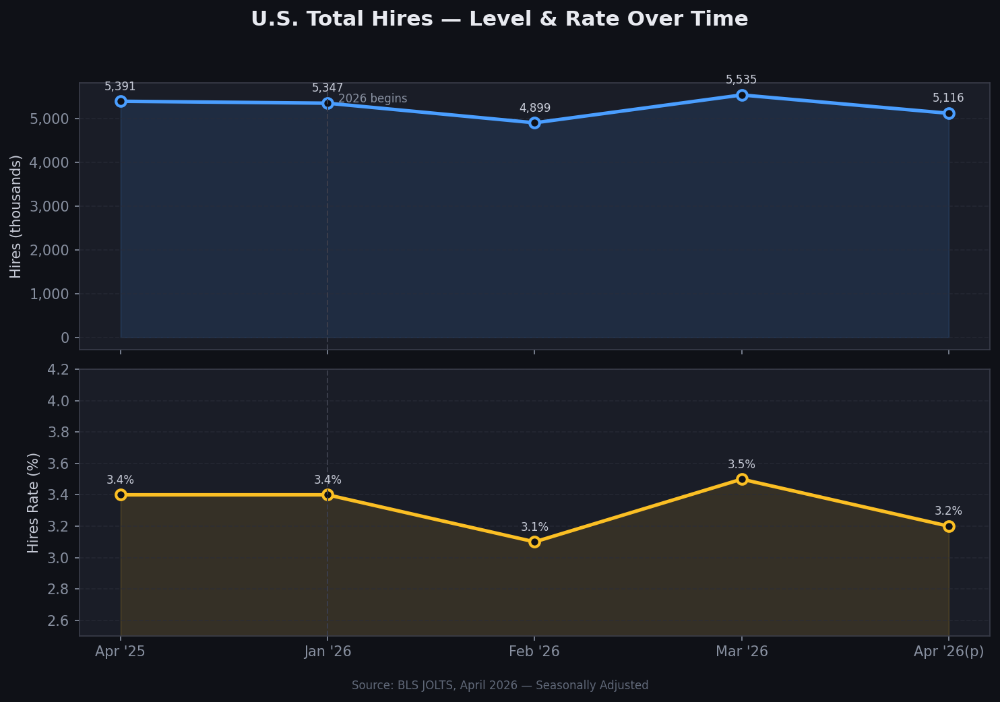
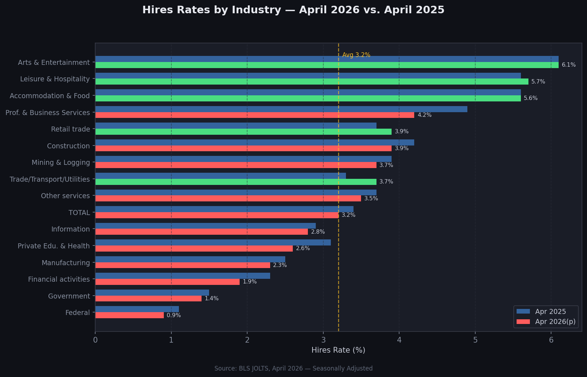
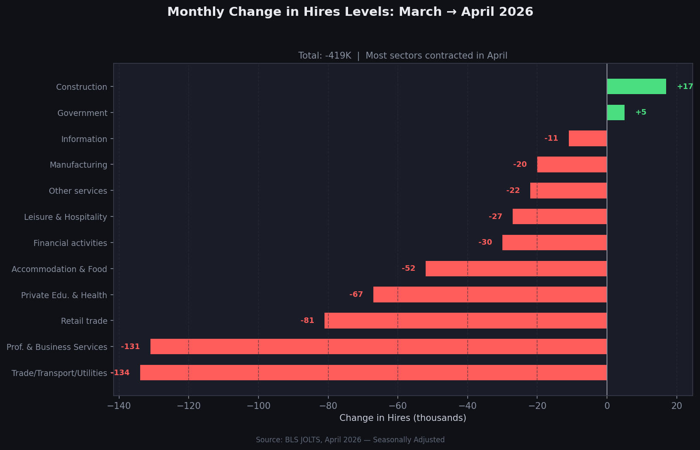
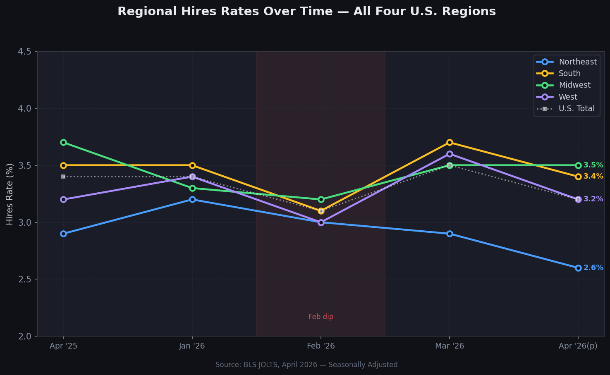
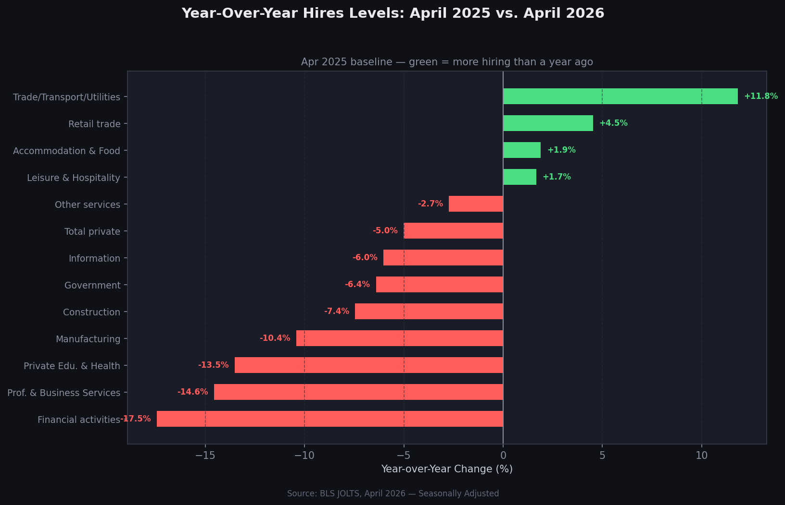
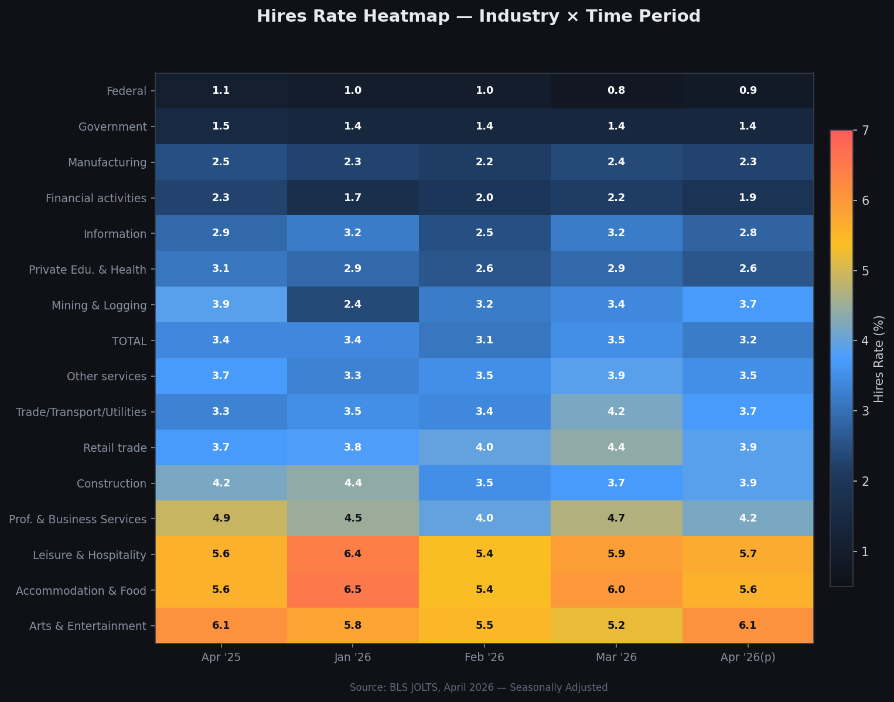

Seasonally adjusted hires levels and rates across industries and regions, with year-over-year and month-over-month comparisons.
Five reporting periods spanning April 2025 through April 2026 (preliminary).

Green bars indicate the sector hired at a higher rate than a year ago; red bars show a decline.

Absolute change in thousands of hires. Most sectors contracted in April.

All four U.S. Census regions compared across five reporting periods.

April 2025 vs. April 2026 — which sectors are hiring more or less than a year ago?

Color intensity reveals both the structural differences between sectors and how each shifted over time.
